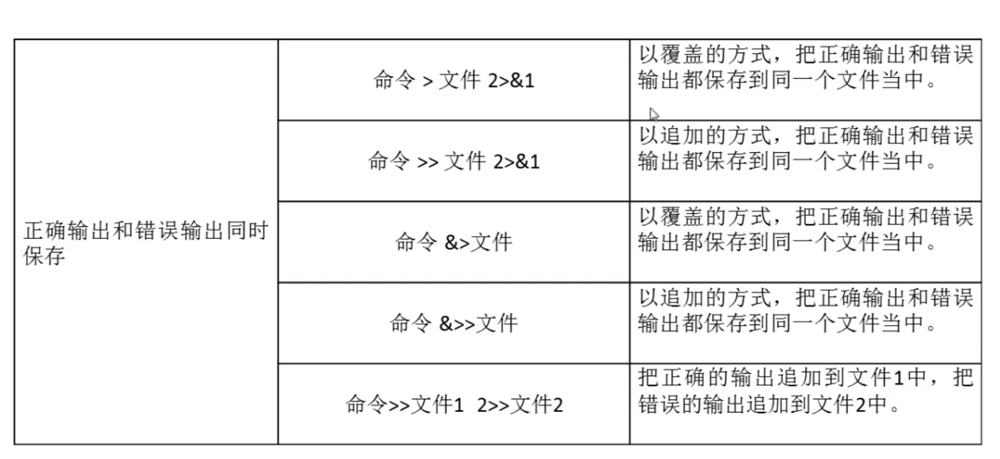
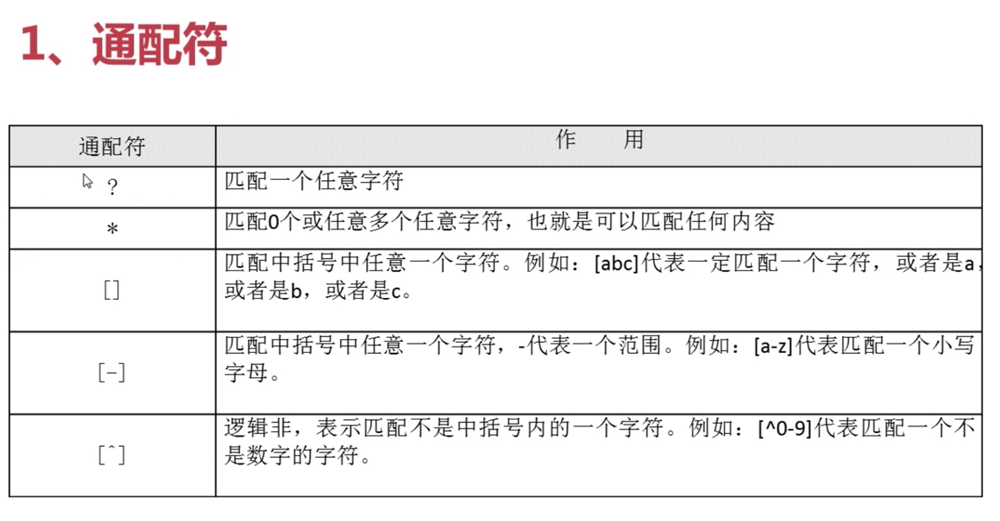
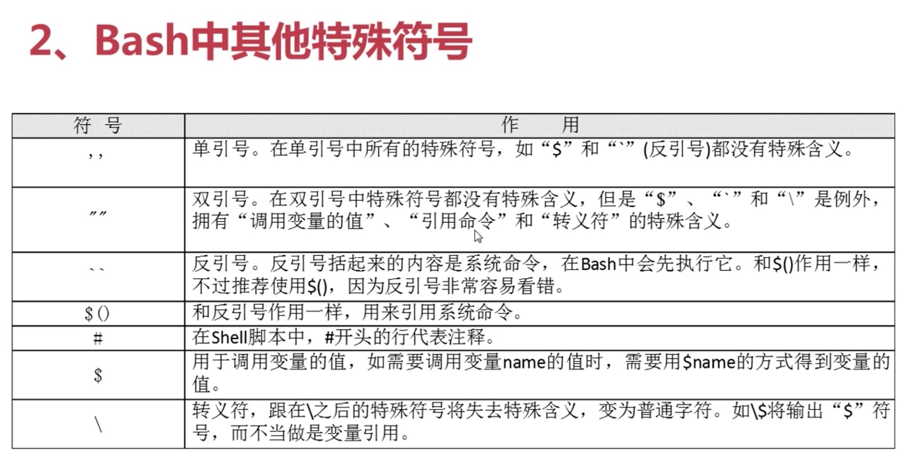

Shell基础
我们敲的命令都是英文字母，即ASCII字符
Shell是一个命令行解释器，它为用户提供了一个向Linux内核发送请求以便运行程序的界面系统级程序，用户可以用Shell来启动、挂起、停止甚至是编写一些程序。
Shell还是一个功能相当强大的编程语言，易编写，易调试，灵活性较强。Shell是解释执行的脚本语言，在Shell中可以直接调用Linux系统命令。
第一个Shell脚本
vim hello.sh
// 写入以下内容
#!/bin/bash
# this is first program
echo -e "hello world"
然后可以直接执行bash hello.sh命令就可以输出
当然也可以执行chmod 755 hello.sh命令将文件设置为可执行文件再执行./hello.sh命令来执行文件
Bash的基本功能
别名 - 命令的别名
执行alias命令
alias cp='cp -i'
alias l.='ls -d .* --color=auto'
alias ll='ls -l --color=auto'
alias ls='ls --color=auto'
alias mv='mv -i'
alias rm='rm -i'
alias which='alias | /usr/bin/which --tty-only --read-alias --show-dot --show-tilde'
就可以查询出系统当前默认生效的别名
如：执行ls命令，实际上执行的是ls --color=auto命令
如果想要设置别名，按照以下格式输入命令
alias ls='ls --color=never'
输出重定向
把本来应该输出到屏幕上的内容保存到文件当中或别的位置
只要执行的命令有输出内容就可以重定向输出，如ls命令
ls > dir.log
// 将ls的执行结果输出到dir.log文件中，若dir.log文件不存在，则创建文件
// 这个命令每次执行会覆盖原文件中的内容
ls >> dir.log
// 这个命令会在文件最后追加写入执行结果，而不是覆盖原文件
lsc 2>>dir.log
// 如果命令不存在或者其他原因导致命令执行错误，想要把这种报错信息写入文件中，则在>>号前面加2，注意写入错误信息的时候>>号左右两侧不能有空格
如果想要将正确信息和错误信息都输出到文件中：

输入重定向
wc [选项][文件名]（该文件用来统计输入的字符）
-c 统计字节数
-w 统计单词书
-l 统计行书
命令 < 文件名
这个命令是把输入源重定向为文件（即获取文件内容作为输入的内容来用）
管道符
学习管道符之前先要了解

管道符：命令1 | 命令2
命令1的正确输出作为命令2的操作对象
more 文件名
// 用来分屏显示文件内容
// 如果我们要执行ls -l命令，但是目录下文件超级多，那么就不是很好查看，这里就可以用到管道符
ls -l | more
// 将ls -l的执行输出结果作为命令more的操作对象
netstat -an
// 查看系统当中所有的网络连接
netstat -an | grep LISTEN
// 查看系统中监听的端口
netstat -an | grep LISTEN | wc -l
// 统计系统中监听的端口的个数
通配符

ls 1.sql
// 列出1.sql文件
ls 1.sql*
// 列出以1.sql开头的所有文件
ls 1.sql?
// 列出以1.sql开头并且后面跟了一个任意字符的文件
ls 1.sql[0-9]
// 列出以1.sql开头并且后面跟了任意一个数字的文件
ls 1.sql[^0-9]
// 列出以1.sql开头并且后面跟了一个非数字的文件
// 通配符主要用来匹配文件名或者目录名称
Bash中的其他特殊符号
